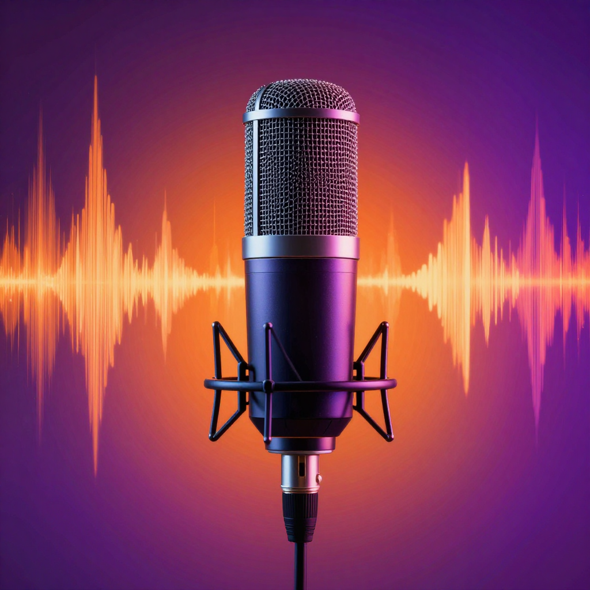

ElevenLabs Review (2026): The Best AI Voice Generator?
📅 Last Updated: March 29, 2026

📋 Table of Contents
What Is ElevenLabs?
ElevenLabs has established itself as the leading AI voice generation platform. Known for incredibly realistic speech synthesis, voice cloning, and multilingual support, it is the go-to tool for content creators, publishers, and businesses.
Key Features
- Text-to-Speech: Natural-sounding AI voices in 29+ languages
- Voice Cloning: Clone any voice from a 30-second sample
- Voice Library: Community-shared voice marketplace
- AI Dubbing: Automatically dub videos into other languages
- Sound Effects: Generate sound effects from text descriptions
- Projects: Long-form audio production (audiobooks, podcasts)
Performance
Voice Quality: ElevenLabs produces the most natural-sounding AI speech available. The voices capture emotion, pacing, and intonation in ways that sound genuinely human. Score: 10/10 For more details, see our AI voice generators guide.
Voice Cloning: From just 30 seconds of audio, ElevenLabs creates convincing voice clones. Professional cloning from longer samples is indistinguishable from the original. Score: 9.5/10 For more details, see our AI podcasting tools guide.
Languages: Supports 29+ languages with high quality across all of them. Not just English-centric. Score: 9/10 For more details, see our Runway ML guide.
Pros
- Best AI voice quality available
- Excellent voice cloning
- 29+ languages supported
- Free tier with 10,000 characters/month
- Powerful API for developers
- AI dubbing for video content
Cons
- Expensive for heavy usage
- Voice cloning raises ethical concerns
- Free tier is limited for long content
- Some latency on real-time use
Pricing
| Plan | Characters | Price |
|---|---|---|
| Free | 10,000/month | $0 |
| Starter | 30,000/month | $5/mo |
| Pro | 100,000/month | $22/mo |
| Scale | 500,000/month | $99/mo |
Final Verdict
ElevenLabs is the best AI voice generator available in 2026. If you need realistic AI speech for any purpose — content creation, audiobooks, accessibility, or business — ElevenLabs is the clear choice. 4.7 out of 5 stars.
🎁 Free AI Tools Guide 2026
Download our free guide with 50+ AI tool comparisons, pricing, and recommendations.
Download Free Guide →📖 Related Articles
Pros & Cons at a Glance
ElevenLabs Free
✅ Pros
• 10,000 chars/month
• High quality voices
• 29 languages
❌ Cons
• Limited characters
• Attribution required
• No commercial use
ElevenLabs Starter ($5/mo)
✅ Pros
• 30,000 chars/month
• Commercial rights
• Voice cloning
❌ Cons
• $5/month
• Characters go fast
• Limited cloning
ElevenLabs Creator ($22/mo)
✅ Pros
• 100,000 chars/month
• Professional cloning
• Priority rendering
❌ Cons
• $22/month
• Still limited for heavy use
• Pro voice extra cost
Voice Cloning
✅ Pros
• Clone your own voice
• 30-second minimum sample
• Natural sounding
❌ Cons
• Quality depends on sample
• Paid feature
• Ethical concerns
Projects (Audiobook)
✅ Pros
• Long-form narration
• Chapter management
• Multiple voices
❌ Cons
• Uses credits quickly
• Requires Creator plan
• Limited pronunciation control
Frequently Asked Questions
What is ElevenLabs?
ElevenLabs is the leading AI voice generation platform offering ultra-realistic text-to-speech, voice cloning, and voice conversion in 29+ languages with the most natural-sounding AI voices available.
Is ElevenLabs free?
ElevenLabs offers a free tier with 10,000 characters per month of text-to-speech. Paid plans start at $5/month for 30,000 characters with commercial rights and voice cloning.
Can ElevenLabs clone my voice?
Yes, ElevenLabs can clone your voice from a short audio sample (30 seconds minimum, 5 minutes recommended for best quality). The cloned voice can then speak any text in your voice style.
How realistic are ElevenLabs voices?
ElevenLabs produces the most realistic AI voices available, with natural breathing, pauses, emphasis, and emotional inflection. Professional voice actors and companies use it for narration, audiobooks, and content creation.
Can I use ElevenLabs for commercial projects?
Yes, ElevenLabs paid plans ($5/month and above) include commercial usage rights. Free tier voices are for personal use only. Always check specific licensing terms for your use case.
Try ElevenLabs Free
Generate realistic AI voices with 10,000 free characters/month.
Try ElevenLabs Free